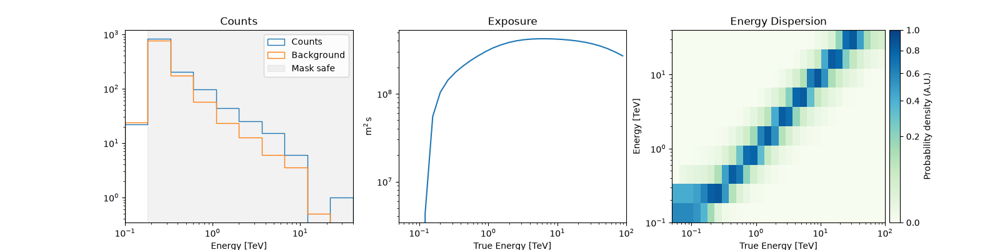
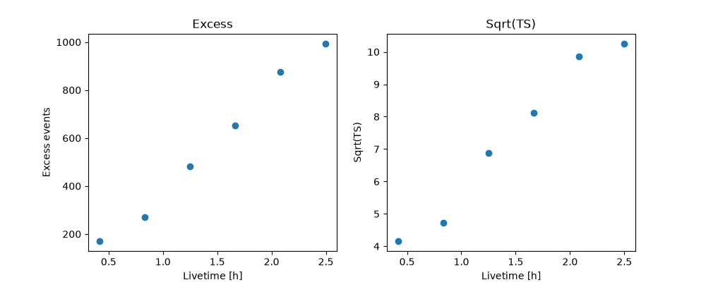
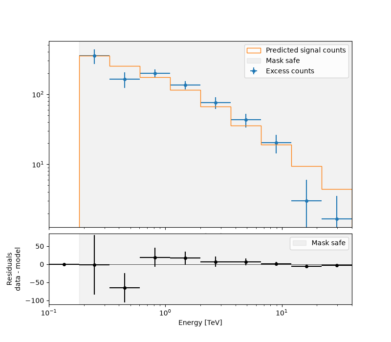

Note
Go to the end to download the full example code or to run this example in your browser via Binder.
Spectral analysis of extended sources#
Perform a spectral analysis of an extended source.
Prerequisites#
Understanding of spectral analysis techniques in classical Cherenkov astronomy.
Understanding the basic data reduction and modeling/fitting processes with the gammapy library API as shown in the tutorial Low level API
Context#
Many VHE sources in the Galaxy are extended. Studying them with a 1D spectral analysis is more complex than studying point sources. One often has to use complex (i.e. non-circular) regions and more importantly, one has to take into account the fact that the instrument response is non-uniform over the selected region. A typical example is given by the supernova remnant RX J1713-3935 which is nearly 1 degree in diameter. See the following article.
Objective: Measure the spectrum of RX J1713-3945 in a 1 degree region fully enclosing it.
Proposed approach#
We have seen in the general presentation of the spectrum extraction for
point sources (see Spectral analysis
tutorial) that Gammapy uses specific
datasets makers to first produce reduced spectral data and then to
extract OFF measurements with reflected background techniques: the
SpectrumDatasetMaker and the
ReflectedRegionsBackgroundMaker. However, if the flag
use_region_center is not set to False, the former simply
computes the reduced IRFs at the center of the ON region (assumed to be
circular).
This is no longer valid for extended sources. To be able to compute
average responses in the ON region, we can set
use_region_center=False with the
SpectrumDatasetMaker, in which case the values of
the IRFs are averaged over the entire region.
In summary, we have to:
Define an ON region (a
SkyRegion) fully enclosing the source we want to study.Define a
RegionGeomwith the ON region and the required energy range (in particular, beware of the true energy range).Create the necessary makers :
the spectrum dataset maker :
SpectrumDatasetMakerwithuse_region_center=Falsethe OFF background maker, here a
ReflectedRegionsBackgroundMakerand usually the safe range maker :
SafeMaskMaker
Perform the data reduction loop. And for every observation:
Produce a spectrum dataset
Extract the OFF data to produce a
SpectrumDatasetOnOffand compute a safe range for it.Stack or store the resulting spectrum dataset.
Finally proceed with model fitting on the dataset as usual.
Here, we will use the RX J1713-3945 observations from the H.E.S.S. first public test data release. The tutorial is implemented with the intermediate level API.
Setup#
As usual, we’ll start with some general imports…
import astropy.units as u
from astropy.coordinates import Angle, SkyCoord
from regions import CircleSkyRegion
# %matplotlib inline
import matplotlib.pyplot as plt
from IPython.display import display
from gammapy.data import DataStore
from gammapy.datasets import Datasets, SpectrumDataset
from gammapy.makers import (
ReflectedRegionsBackgroundMaker,
SafeMaskMaker,
SpectrumDatasetMaker,
)
from gammapy.maps import MapAxis, RegionGeom
from gammapy.modeling import Fit
from gammapy.modeling.models import PowerLawSpectralModel, SkyModel
Select the data#
We first set the datastore and retrieve a few observations from our source.
datastore = DataStore.from_dir("$GAMMAPY_DATA/hess-dl3-dr1/")
obs_ids = [20326, 20327, 20349, 20350, 20396, 20397]
# In case you want to use all RX J1713 data in the H.E.S.S. DR1
# other_ids=[20421, 20422, 20517, 20518, 20519, 20521, 20898, 20899, 20900]
observations = datastore.get_observations(obs_ids)
Prepare the datasets creation#
Select the ON region#
Here we take a simple 1 degree circular region because it fits well with
the morphology of RX J1713-3945. More complex regions could be used
e.g. EllipseSkyRegion or RectangleSkyRegion.
target_position = SkyCoord(347.3, -0.5, unit="deg", frame="galactic")
radius = Angle("0.5 deg")
on_region = CircleSkyRegion(target_position, radius)
Define the geometries#
This part is especially important.
We have to define first energy axes. They define the axes of the resulting
SpectrumDatasetOnOff. In particular, we have to be careful to the true energy axis: it has to cover a larger range than the reconstructed energy one.Then we define the region geometry itself from the on region.
# The binning of the final spectrum is defined here.
energy_axis = MapAxis.from_energy_bounds(0.1, 40.0, 10, unit="TeV")
# Reduced IRFs are defined in true energy (i.e. not measured energy).
energy_axis_true = MapAxis.from_energy_bounds(
0.05, 100, 30, unit="TeV", name="energy_true"
)
geom = RegionGeom(on_region, axes=[energy_axis])
Create the makers#
First we instantiate the target SpectrumDataset.
Now we create its associated maker. Here we need to produce, counts, exposure and edisp (energy dispersion) entries. PSF and IRF background are not needed, therefore we don’t compute them.
IMPORTANT: Note that use_region_center is set to False. This
is necessary so that the SpectrumDatasetMaker
considers the whole region in the IRF computation and not only the
center.
maker = SpectrumDatasetMaker(
selection=["counts", "exposure", "edisp"], use_region_center=False
)
Now we create the OFF background maker for the spectra. If we have an exclusion region, we have to pass it here. We also define the safe range maker.
bkg_maker = ReflectedRegionsBackgroundMaker()
safe_mask_maker = SafeMaskMaker(methods=["aeff-max"], aeff_percent=10)
Perform the data reduction loop.#
We can now run over selected observations. For each of them, we:
Create the
SpectrumDatasetCompute the OFF via the reflected background method and create a
SpectrumDatasetOnOffobjectRun the safe mask maker on it
Add the
SpectrumDatasetOnOffto the list.
datasets = Datasets()
for obs in observations:
# A SpectrumDataset is filled in this geometry
dataset = maker.run(dataset_empty.copy(name=f"obs-{obs.obs_id}"), obs)
# Define safe mask
dataset = safe_mask_maker.run(dataset, obs)
# Compute OFF
dataset = bkg_maker.run(dataset, obs)
# Append dataset to the list
datasets.append(dataset)
display(datasets.meta_table)
NAME TYPE TELESCOP ... RA_PNT DEC_PNT
... deg deg
--------- -------------------- -------- ... --------------- -----------------
obs-20326 SpectrumDatasetOnOff HESS ... 259.29851667325 -39.762222222222
obs-20327 SpectrumDatasetOnOff HESS ... 257.47731666009 -39.762222222222
obs-20349 SpectrumDatasetOnOff HESS ... 259.29851667325 -39.762222222222
obs-20350 SpectrumDatasetOnOff HESS ... 257.47731666009 -39.762222222222
obs-20396 SpectrumDatasetOnOff HESS ... 258.38791666667 -39.0622222341429
obs-20397 SpectrumDatasetOnOff HESS ... 258.38791666667 -40.4622222103011
Explore the results#
We can peek at the content of the spectrum datasets

Cumulative excess and significance#
Finally, we can look at cumulative significance and number of excesses.
This is done with the info_table method of
Datasets.
info_table = datasets.info_table(cumulative=True)
display(info_table)
name counts excess ... acceptance_off alpha
...
------- ------ --------------- ... ------------------ -------------------
stacked 1216 170.5 ... 18.0 0.5
stacked 2339 270.5 ... 36.0 0.5
stacked 3521 480.5 ... 54.0 0.5
stacked 4684 653.0 ... 72.0 0.5
stacked 5895 874.66650390625 ... 98.86793518066406 0.45515263080596924
stacked 6985 993.166015625 ... 116.91612243652344 0.46186956763267517
And make the corresponding plots
fig, (ax_excess, ax_sqrt_ts) = plt.subplots(figsize=(10, 4), ncols=2, nrows=1)
ax_excess.plot(
info_table["livetime"].to("h"),
info_table["excess"],
marker="o",
ls="none",
)
ax_excess.set_title("Excess")
ax_excess.set_xlabel("Livetime [h]")
ax_excess.set_ylabel("Excess events")
ax_sqrt_ts.plot(
info_table["livetime"].to("h"),
info_table["sqrt_ts"],
marker="o",
ls="none",
)
ax_sqrt_ts.set_title("Sqrt(TS)")
ax_sqrt_ts.set_xlabel("Livetime [h]")
ax_sqrt_ts.set_ylabel("Sqrt(TS)")
plt.show()

Perform spectral model fitting#
Here we perform a joint fit.
We first create the model, here a simple powerlaw, and assign it to
every dataset in the Datasets.
spectral_model = PowerLawSpectralModel(
index=2, amplitude=2e-11 * u.Unit("cm-2 s-1 TeV-1"), reference=1 * u.TeV
)
model = SkyModel(spectral_model=spectral_model, name="RXJ 1713")
datasets.models = [model]
Now we can run the fit
fit_joint = Fit()
result_joint = fit_joint.run(datasets=datasets)
print(result_joint)
OptimizeResult
backend : minuit
method : migrad
success : True
message : Optimization terminated successfully.
nfev : 38
total stat : 52.76
CovarianceResult
backend : minuit
method : hesse
success : True
message : Hesse terminated successfully.
Explore the fit results#
First the fitted parameters values and their errors.
display(datasets.models.to_parameters_table())
model type name value unit ... min max frozen link prior
-------- ---- --------- ---------- -------------- ... --- --- ------ ---- -----
RXJ 1713 index 2.1107e+00 ... nan nan False
RXJ 1713 amplitude 1.3577e-11 TeV-1 s-1 cm-2 ... nan nan False
RXJ 1713 reference 1.0000e+00 TeV ... nan nan True
Then plot the fit result to compare measured and expected counts. Rather than plotting them for each individual dataset, we stack all datasets and plot the fit result on the result.
# First stack them all
reduced = datasets.stack_reduce()
# Assign the fitted model
reduced.models = model
# Plot the result
ax_spectrum, ax_residuals = reduced.plot_fit()
plt.show()
